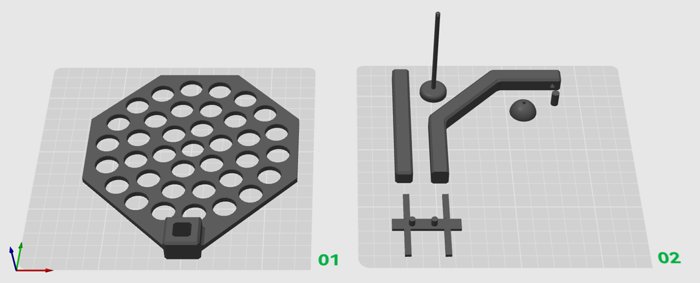
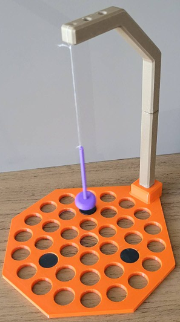
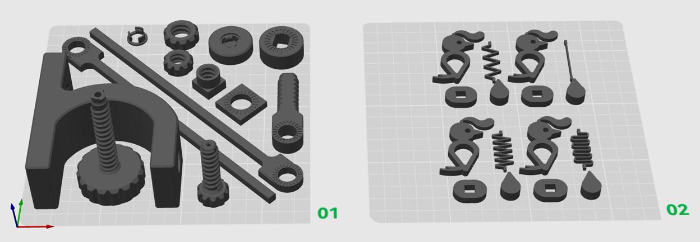
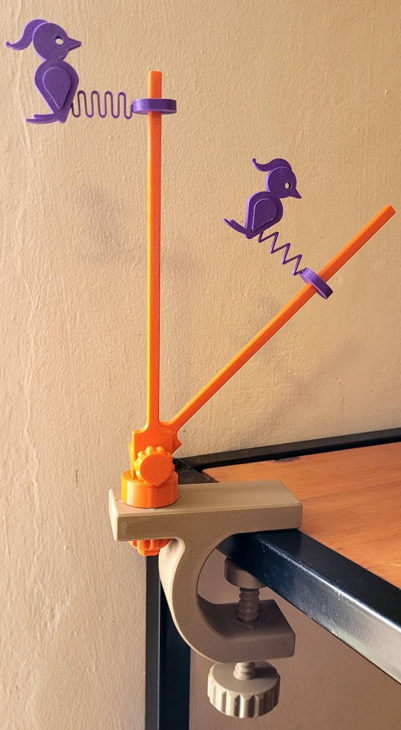
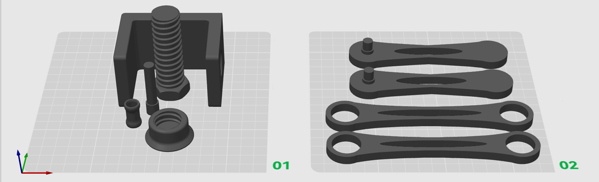
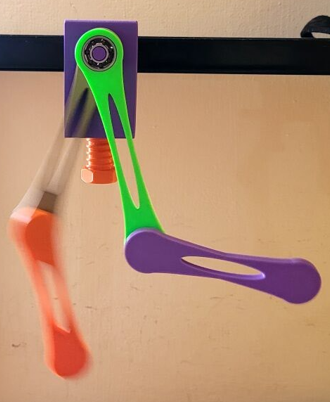

Presentación
Este sitio reúne materiales complementarios asociados al artículo
Dispositivos experimentales impresos en 3D para la enseñanza de sistemas dinámicos en Física.
Se incluyen archivos STL, imágenes de modelos 3D, fotografías de piezas impresas
y orientaciones básicas de montaje de tres dispositivos: un péndulo magnético,
un pájaro carpintero y un péndulo doble.
El propósito de este material es favorecer la reproducción y adaptación de los dispositivos
en contextos educativos. Los recursos permiten explorar, desde el trabajo experimental,
ideas vinculadas con sistemas dinámicos, sensibilidad a las condiciones iniciales,
dependencia de parámetros, predictibilidad limitada y comportamiento no lineal.
Dispositivos disponibles
Péndulo magnético


Dispositivo diseñado para analizar cómo la configuración de imanes y las condiciones iniciales
influyen en la trayectoria del péndulo y en la predictibilidad del sistema.
Materiales no impresos: hilo, masa ferromagnética, imanes y soporte.
Parámetros sugeridos: PLA, altura de capa 0,20 mm, relleno 15–20%.
Descargar STL
Pájaro carpintero


Dispositivo diseñado para estudiar cómo la rigidez del resorte, la inclinación del mástil
y las condiciones iniciales influyen en el movimiento oscilatorio y en el descenso del sistema.
Materiales no impresos: resorte, varilla, masa adicional y soporte.
Parámetros sugeridos: PLA, altura de capa 0,20 mm, relleno 20%.
Descargar STL
Péndulo doble


Dispositivo diseñado para comparar la evolución de dos péndulos dobles iniciados
en condiciones similares y analizar la divergencia progresiva de sus movimientos.
Materiales no impresos: rodamientos, tornillos, masas y soporte.
Parámetros sugeridos: PLA, altura de capa 0,20 mm, relleno 20–30%.
Descargar STL